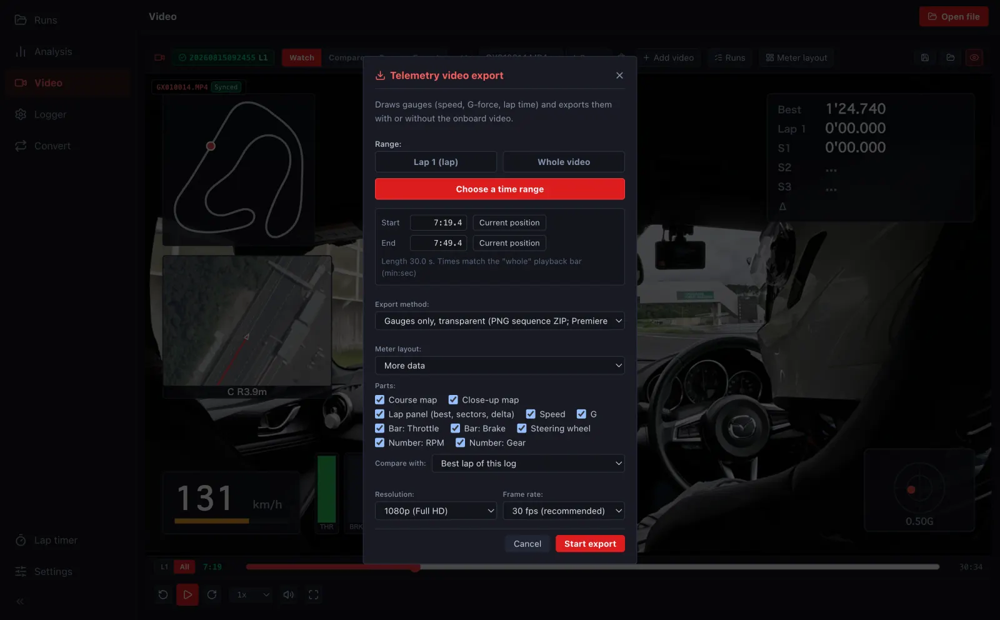

動画を書き出すExporting video
メーターを焼き込んだ動画や、メーターだけの透明な動画を書き出して、YouTube や動画の編集ソフトで使えます。Export video with the gauges burned in, or gauges only on a transparent background for YouTube or your video editor.
-
動画の画面の 書き出す を押します。範囲は 周・動画全体・時間で範囲を決める から選びます。時間で決めるときは、開始・終了を分:秒で書くか、今の位置 で入れます。Press Export on the video screen. Choose the range: the lap, Whole video or Choose a time range; for a time range, type start and end (min:sec) or use Current position.

- 書き出しの方式を選びます。メーターだけ・背景は透明 は Premiere・DaVinci Resolve などで動画に重ねる用、動画にメーターを焼き込む はそのまま見られる MP4 です。Pick the method: Gauges only, transparent to overlay in Premiere, DaVinci Resolve and the like, or Burn meters into the video for a ready-to-watch MP4.
- メーターの並び・出す部品・比べる周・解像度・フレームレートを選び、書き出し開始 を押します。Choose the meter layout, parts, comparison lap, resolution and frame rate, then press Start export.
書き出しは、デスクトップ版・ブラウザ版 (パソコン) で行います。Exporting is done in the desktop app or the browser on a computer.